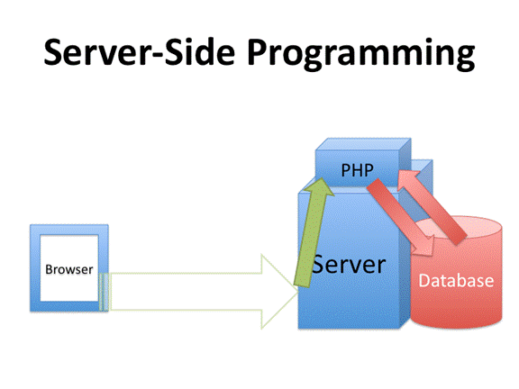

Server-Side Programming

There's a new addition on the server, called server-side programming. When the client sends a request to the server, the server discovers that the page being requested has special programming in the document. This could be PHP, ASP.NET, JSP, or ColdFusion. All of these are server-side programming languages. These are languages that run on the server so, when the server gets the request, it processes the programming instructions.
Where the power of this comes in is that the server-side languages (such as PHP) are able to link up with a database and use that data to build a web page on the fly.
A good example of this would be eBay where you type in a certain product and the server creates a web page using the data in a database that shows a list of all the similar products that match your search. No human built that page, it was all created on the fly based on the data in database.
Amazon.com is another good example of this technology at work and so is the Google search page when it displays the results.